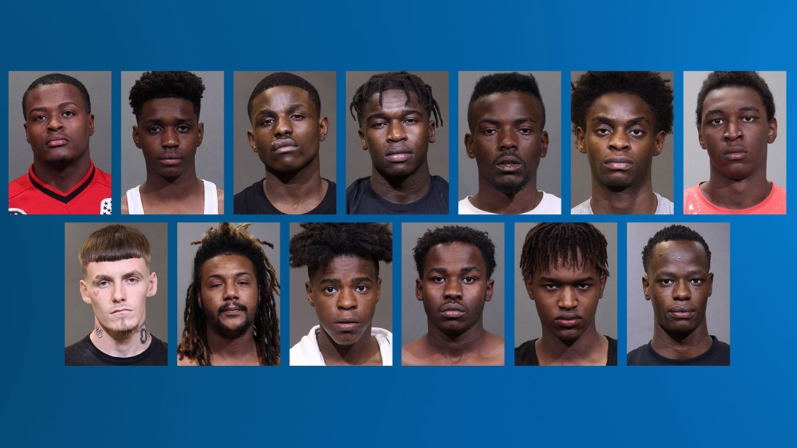

BL-800 Gang
(Bantu Life-800,Bantu Love,Brotherly Love)
Category: Ohio Criminal Gangs • Date: 10/14/2025
Overview
BL-800 is a well-known gang based in Columbus, Ohio, involved in a wide range of criminal activities, including drug trafficking, robberies, assaults, and organized turf wars. They have a reputation for violence and are considered a significant threat within the local criminal landscape. Their operations often intersect with other gangs and illicit networks, making them a focus of law enforcement attention.
The "BL" in BL-800 originally stood for "Bantu Life," referencing a Somali ethnic group. Over time, it was rebranded to "Brotherly Love" to present a more innocuous image. The "800" refers to the 800 block of Wedgewood Drive, where the gang was founded, and also added to represent the members who are not of Somali descent, as the gang is based in the Wedgewood and South Park areas of the city's west side.
Background
BL-800, also known as Bantu Life 800, emerged in Columbus, Ohio, in the early 2010s. It started in the Wedgewood area, with the "800" referencing the block where the gang formed. Initially, the gang was composed of Somali-American and African-American youth who banded together for protection, local influence, and street credibility. Over time, the group expanded, recruiting more members and engaging in increasingly organized criminal activity.
BL-800 was first detected by police in 2021 after an increase in violence in the Wedgewood Village Apartments area. Law enforcement subsequently conducted an 18-month investigation into the group.
The gang became notorious for thefts, violent street crimes, and car break-ins, targeting both local neighborhoods and more affluent areas such as Easton and Polaris. Unlike some other gangs, BL-800 was less about drug trafficking and more focused on asserting control over territory and carrying out acts of violence that solidified their reputation.
Key events include a fatal shooting in the Westgate neighborhood in 2022, which led to the imprisonment of two members. Around the same time, an 18-month police investigation known as Operation Mind Your Manors resulted in the arrest and indictment of multiple members, dealing a significant blow to the gang but not fully dismantling it, as a result of this operation, BL-800 split off into different groups and other small groups that were once unified under the name of BL-800. As of 2025, law enforcement continues to monitor BL-800, and its other offshoot groups while the gang still influences the Wedgewood and South Park areas.
BL-800’s history is essentially one of rapid formation from local youth, a rise in street-level influence, violent confrontations, and ongoing conflict with law enforcement, making them one of the most notorious gangs in Columbus over the last decade.
Investigation / Details
BL-800, also known as Bantu Life 800, has been the target of multiple law enforcement operations in Columbus, Ohio. A major investigation, Operation Mind Your Manors, led to the arrest and indictment of several members involved in violent crimes and theft. The gang has been linked to fatal shootings, car break-ins in upscale neighborhoods, and organized street violence.
Known / Likely Opps of BL-800:
- Placeholder
- Placeholder
- Placeholder
- Placeholder
Basic Informational Breakdown:
- Founded: Early 2010s
- Primary Territory: Wedgewood and South Park Apartments, Columbus, Ohio
- Known Activities: Violent crimes, theft, car break-ins, territorial disputes
- Law Enforcement Attention: The group has been targeted by Columbus police, with numerous arrests of members of BL-800 and members linked to their group offshoots. Crackdowns have focused on reducing gang violence in Wedgewood and surrounding neighborhoods, leading to convictions of multiple members for violent crimes. Aswell as ongoing monitoring by Columbus Division of Police